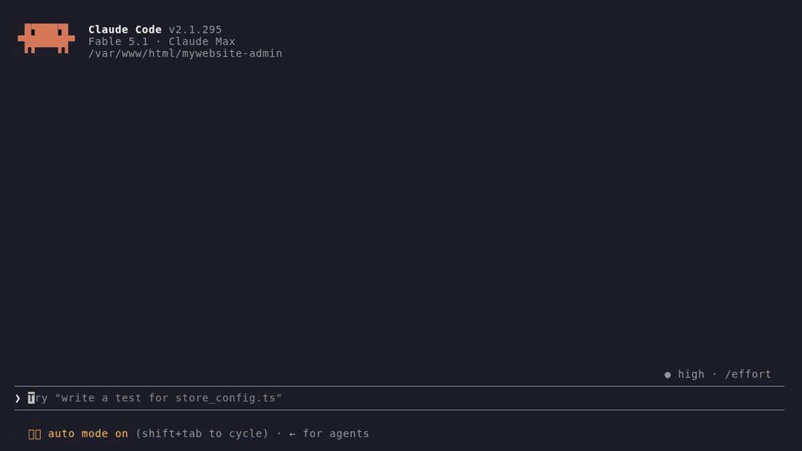
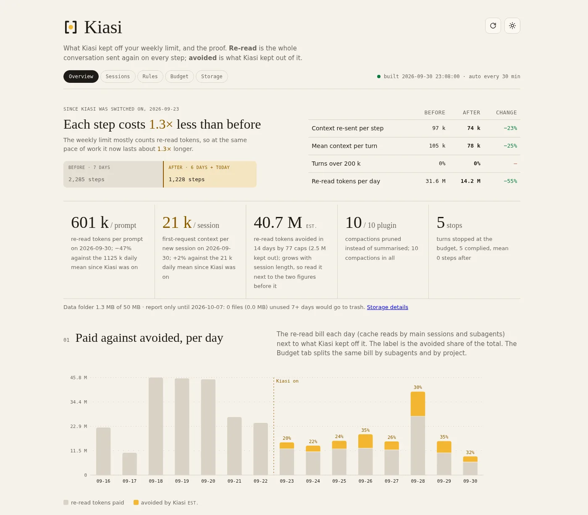

Your weekly limit is spent
re-reading.
Every step of Claude Code re-sends the whole conversation, so one noisy test log is paid for on every step after it. Kiasi keeps the noise out. Install it, and tomorrow your own dashboard shows the days of weekly limit it bought back.
Fixed rules, Python standard library, nothing sent anywhere.

One machine, measured from its own transcripts: 16 days before, 7 days after. Yours is the number that matters, and Kiasi measures it the same way.
Fig. 01 · a week on your plan
Same work. More week.
Your weekly limit is a tank. Every step of Claude Code drains it by the size of the whole conversation. Kiasi keeps the conversation small, so the same week of work drains less of the tank.
1.0×further on the same limit
Press play, or pick how noisy your sessions are.
- Mon
- Tue
- Wed
- Thu
- Fri
- Sat
- Sun
A model week, not a promise: each day burns a fixed share of the limit, and Kiasi's share is the per-step saving measured on the reference turn mix. Your own dashboard shows your own number.
Fig. 02 · one tool output
What one step looks like after Kiasi.
A package install prints thousands of lines. Claude reads two of them. Without Kiasi the whole log is re-sent on every later step of the turn.
Fig. 03 · six leaks, six rules
Fixed thresholds. No model in the loop.
Each rule is a Claude Code hook with a plain constant you can change. Nothing is summarised by an AI, nothing is guessed.
- 01output cap at 12,000 chars
- 02progress bars stripped
- 03same file read twice → pointer
- 04paste over 4,000 chars → disk
- 05warn at 30 calls, stop at 60
- 06same failure ×3 → rethink
- 07old output pruned at compaction
- 08task state re-injected
- 09every cut saved in full
Output cap and cleaning
Over 12,000 chars is cut. Progress bars, spinners and repeated lines are stripped first. The full text is saved.
PostToolUseTurn budget and loop check
Warned at 50 steps, paused at 60. The same call failing three times tells Claude to rethink.
PostToolUse · PostToolUseFailure · PostToolBatchRe-read skip
The same file, unchanged, returns a pointer to the copy already in context instead of the file again.
PreToolUsePaste manager
Over 4,000 chars is saved to disk and replaced by a path. Over 40,000 is refused with the path to resend.
UserPromptSubmitPruner and state
At compaction your prompts and Claude's replies stay word for word. Old tool output goes. Task, edited files and failing commands come back.
session.compactLocal dashboard
Every action Kiasi took, the tokens it kept off your limit, and your 5-hour and weekly limits, on 127.0.0.1.
SessionStartFig. 04 · the everyday
Always on. Never in the way.
The parts you see every session: a status line with your real limits, and tools Claude reaches for instead of flooding the conversation.
- ctxhow much of the context window this turn carries
- turnsteps of the 60 before Kiasi pauses the turn
- 5h · wkyour plan limits, when they reset, and ▲ when you are ahead of the week's pace
- kiasi −tokens kept off your limit this session
Status line
One command writes the two settings Kiasi needs and adds Kiasi to your status line, after whatever you already had. The status line is the only place your 5-hour and weekly limits are read from.
/kiasi:limits setupRun
A build, a test run or a long log goes through a tool that saves the full output and returns a digest. The whole text never enters the conversation.
mcp__kiasi__runDistill
A short Python or Node script runs over big files on disk. Only what it prints comes back, so counting and parsing cost almost nothing.
mcp__kiasi__distillFetch and search
A web page is saved and searched; only its head and the matching lines come back. Search finds a line in any saved output, paste or note.
mcp__kiasi__fetch · mcp__kiasi__searchDashboard from login
One command registers the dashboard with your system's login starter, so it runs with no Claude Code session open. Linux, macOS and Windows.
/kiasi:dashboard autostart onCleanup
Saved outputs and pastes older than seven days are compressed, then dropped. The data folder stays small on its own, and a restore command brings a day back.
daily, at session startThe run, distill, fetch and search tools need CLAUDE_CODE_ENABLE_FUNCTION_HOOKS=1, which /kiasi:limits setup writes for you.
Fig. 05 · your own before and after
The receipt is yours.
The days before you installed Kiasi are the baseline. Every cut, skip and stop is a row with the saved file beside it. Rebuilt every 30 minutes by a small local server.

Fig. 06 · results
Other people's numbers.
Each card is one machine's last 30 days, posted by its owner from the dashboard's Your month panel, with the plan and the kind of work beside it. Every card is read before it goes up. Add yours.
Fig. 07 · install
Three lines. About a minute.
Nothing to build, nothing to sign up for. Requires Claude Code 2.1.283 or newer and Python 3.8 or newer, standard library only.
- Install the plugin
In a terminal, two lines. In the VS Code extension, one button, or
/pluginsin the prompt box. Both ways are beside this. - Restart, then one command
Run
/kiasi:limits setuponce. It writes the two settings Kiasi needs to~/.claude/settings.json, the compaction window at 200k and the pruner switch, and adds your plan limits to the status line. The dashboard starts itself with every session at127.0.0.1:8787.
# 1 · in Claude Code/plugin marketplace add raj-rangani/kiasi/plugin install kiasi@kiasi# 2 · restart Claude Code, then/kiasi:limits setup✓ settings written, status line set up✓ dashboard at http://127.0.0.1:8787
# 1 · the button above, or in the prompt box/plugins → Marketplaces → add raj-rangani/kiasi → Plugins → Install# 2 · "Restart Claude to apply plugin changes", then/kiasi:limits setup✓ settings written, status line set up✓ dashboard at http://127.0.0.1:8787
/plugin uninstall kiasi@kiasi and the two settings go back to what they were.Fig. 08 · the ask
Make this week's limit last.
One minute to install. Your first before-and-after shows up the next day.